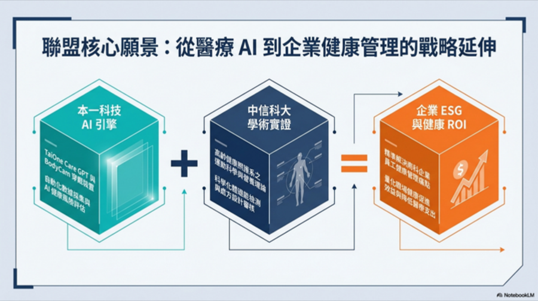
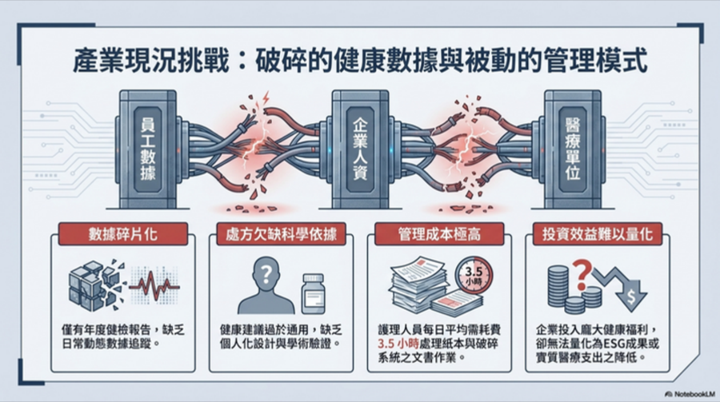
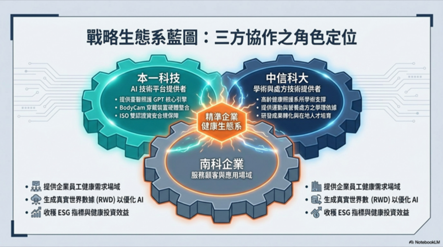
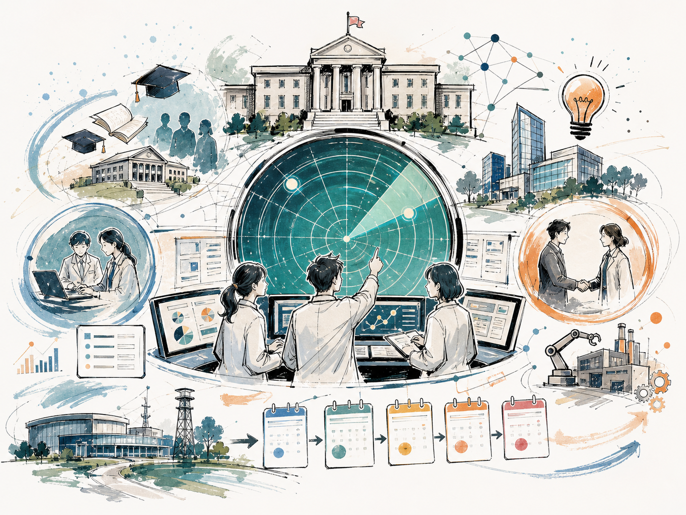

AAI 健康促進人才培育與認證
中信科大發證與培訓，本一科技提供平台、業師、企業題目與實作場域。
- AI 體適能檢測員、健康處方師、企業健康數據分析師。
- 24/40/60/80 小時課程版本，對接科學園區人才培育。
- 5/11 要確認主持人、師資、課程與發證流程。
Editorial Thesis
5/11 會議應該把「概念討論」推進到「誰主責、先做哪家企業、申請哪個補助、下個月交付什麼」的決策狀態。本一科技要帶進場的是一套完整資料包，而不是單點產品介紹。
Three Chapters
每張卡都是 5/11 會議可以單獨討論、單獨分工、單獨包裝補助或商業案的模組。

A中信科大發證與培訓，本一科技提供平台、業師、企業題目與實作場域。

B從企業健康鑑定、方案設計、平台導入，到 ESG/職安健康報告。

C以 50 人左右試辦規模建立可對外發表、可申請補助、可複製銷售的樣板。
Grant Radar

本機文件有「已申請」說法，第一動作是確認系統送件紀錄。若未送件，不建議硬衝。
最值得本一科技短期評估的中央案。以 AI 健康促進 SaaS 與企業 dashboard 包裝。
需園區科學事業作申請機構，至少結合 1 家學研機構。ASML 或園區中小企業是否願意出面是關鍵。
115 年度多已截止，但非常適合本案長期主線。用中信範本先搭計畫書骨架。
適合中信科大主導課程，搭配本一科技業師、平台、企業題目與見習場域。
可包裝成 AI 健康風險預測與數據治理平台，但審查強度高，不搶本週主線。
Week Sprint
切換日期查看每日任務。手機版可左右滑動日期。
今天的目標是排除錯誤進度，尤其是臺南 SBIR 是否真的送件。
把本一科技的能力從簡報語言轉成申請書與企業審查能用的附件。
決定 DIGITAL+ 是否進入本輪申請，並把中信科大需要補的資料講清楚。
把 5/11 的會議材料從資訊堆疊整理成可決策的故事線。
確認本一科技承諾範圍、敏感資料、價格帶與企業對外版本。
把文件包定稿，會中直接收斂主計畫名稱、企業示範、補助申請與分工。
Pilot Storyboard
這一段可直接當作 ASML 或 50 人左右中小企業約訪時的提案大綱。
HR、職安、IT、法務訪談，確認員工族群、資料治理與資安要求。
檢測流程、同意書、LineBot/App、dashboard 指標設定與測試。
員工檢測、健康處方、追蹤提醒、課程活動與營運週報。
使用率、完測率、風險族群與活動成效分析，產出中期改善建議。
企業彙總 dashboard、結案報告、年度導入規劃與正式 SOW。
Meeting Pack
以下連結會開啟 Markdown 草稿；正式對外前仍需本一科技確認敏感資料、法務與資安版本。
Official Sources
網頁中的補助期限與資格判斷，對應這些官方或半官方入口。